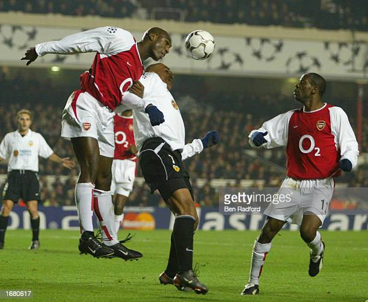
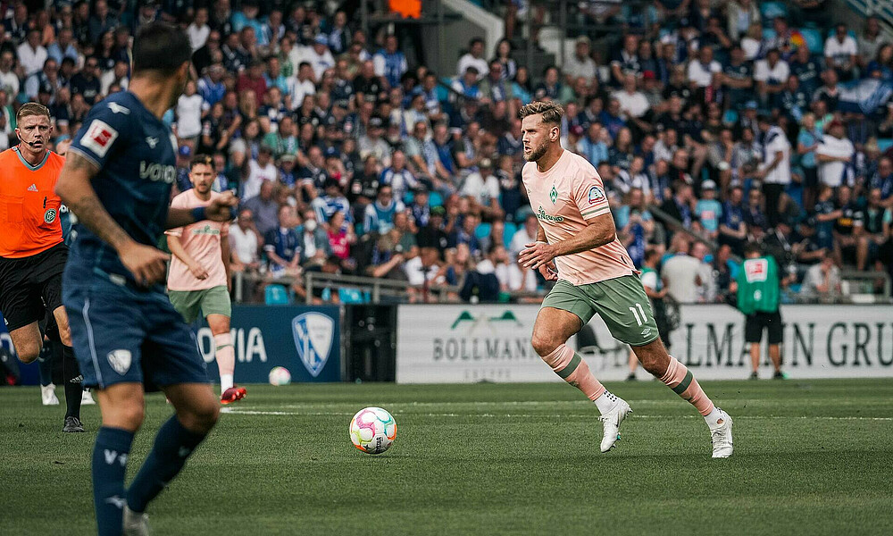
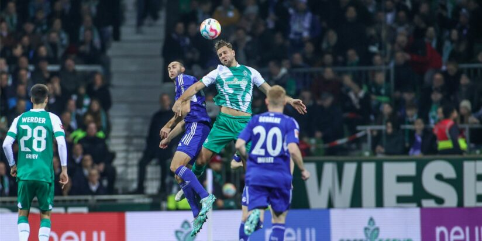
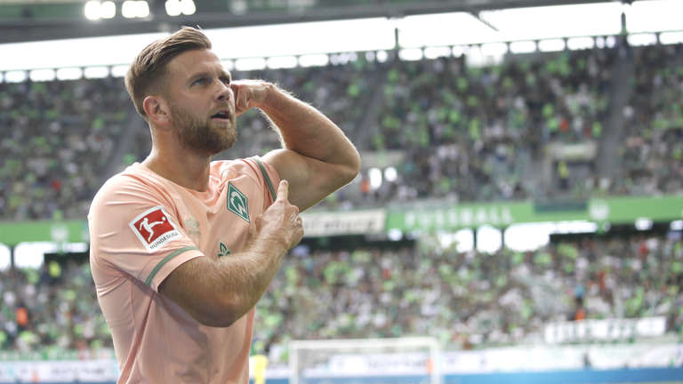

Moogle
Sol campbell
Wan wurde er geboren (geburts ort)
- Er wurde am 18 september 1974 geboren
- Er wurde in Newham, london geboren
welche Trikot nummer hat er gehabt?
- Verein Trikot nummer von Campbell
- Fc Arsenel 23
- und bei Tottenham Hotspur hat er die rückrn nummer die 5 und die 23
- und bei FC Portsmounth hat er dir trikot nummer 23 gehabt

Wie viele Tore hat Sol Campbell?
- bei Arsenel hat er 135 tore geschossen und (8) kopf bälle gemacht
- und er hat bei Tottenham Hotspur 255 tore gemachte und (10) Kopfbälle gemacht
- und bei Fc Portsmounten 95 Tore geschossen und (2) kopfä bälle gemacht
- Ins gesamt hat er 485 tore geschossen
Wie groß ist sol Campbell (wie viel wiegt er)
- er ist 1,88 m und wiegt 91 kg
Wie Lange hat er gespielt
Niclas Füllkrug
Wan wurde er gebohren
- Er wurde am 9. Februar 1993
wan wurde er gebohren
- Er wurde in hannover gebohren
Welche Trikot nummern hat er gehabt
- Er hate die nummern 11,9 und 26
wo hat er alles gespielt
- Er hat bei Hannover gespielt und er spielet immomentbei Werder Bremen und er spielt in der nationalmanschaft von Deutschland
wie viele tore hat er gemacht
- Er hat bei Hannover 96 22 tore gemacht bei Werder Bremen hat er 38 tore gemacht und 2022 hat er 20 tore gemacht in seiner ganzrn karriere hat er 112 toregemacht
Wie groß ist Niclas Füllkrug ( wie viel wiegt er )
- Er ist 1,88 und wiegt 83 kilo


